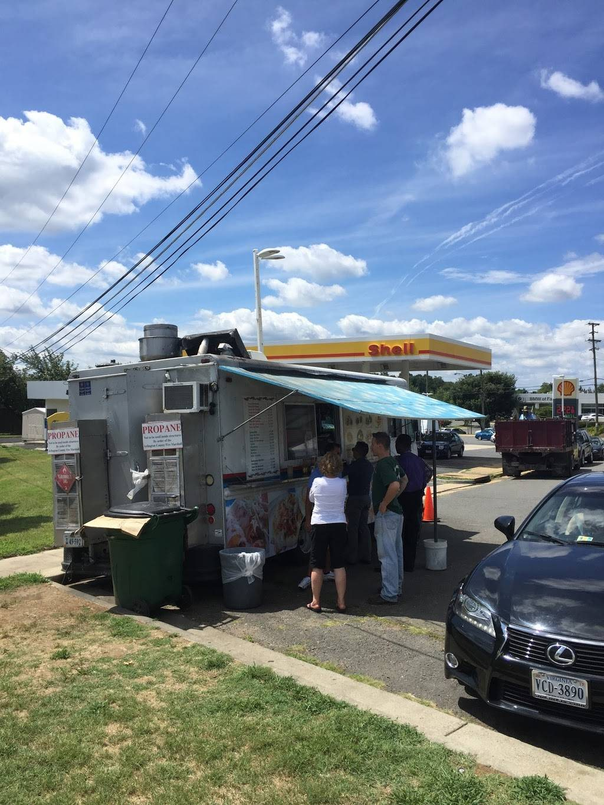
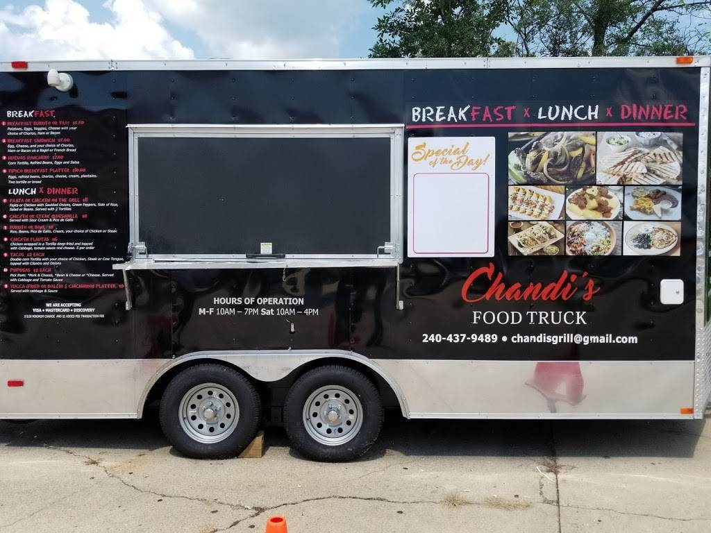

Taco Cinco de Mayo
Arlington, Virginia
Details not owner-verified
Claim this truck
Taco Cinco de Mayo
Arlington, Virginia
Details not owner-verified
Claim this truck
Washington DC Food Trucks
Discover DC-area food truck profiles and owner-updated details.
Food Truck Finder helps foodies, owners, and organizers keep DMV food truck discovery less scattered as more truck profiles are claimed.
Food truck profile previews
App download links
Owner-updated when claimed

Honest status
Seeded profiles are shown as awaiting owner claim, not live or verified.
Washington DC discovery
Download the app to follow trucks and check profile details.
Known Truck Profiles
Profile previews connected to this market.
These pages are built from Food Truck Finder profile assets. Owners can claim a verified match or ask us to locate the right listing before adding customer-facing details.
Taco Cinco de Mayo
Arlington, Virginia
Details not owner-verified
Claim this truck
 Burrito Bros
Arlington, Virginia
Details not owner-verified
Get owner claim help
Burrito Bros
Arlington, Virginia
Details not owner-verified
Get owner claim help

Tacos El Torito McLean, Virginia Details not owner-verified Get owner claim help
Chandi's Food Truck Rockville, Maryland Details not owner-verified Get owner claim help